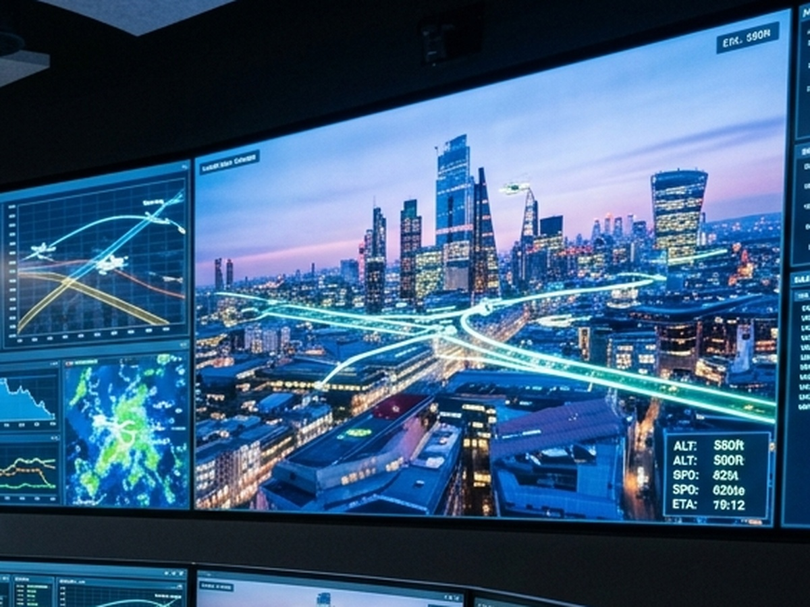

01 / UAM-EMS운용개념 · 안전평가
응급이송
UAM-EMS
응급환자 이송의 임무 프로파일과 취항 전 안전평가 절차를 연구합니다. 소방·의료·지자체의 수요를 바탕으로 운용개념과 사업모델을 검토합니다.
2027 준비 과업
- 응급이송 운용개념서(안) 작성
- 헬기 EMS 자료를 활용한 운용 분석
- 수요기관 협의 및 사업모델·원가 초안 검토
Urban Air Mobility · 2027 Direction
UAM KOREA는 ㈜에어엑스의 UAM 사업부문입니다.
안전 인텔리전스 연구를 바탕으로 응급이송·산불 감시·도서 항공지원의 운항개념을 설계하고, 수요기관 협의와 실증을 준비합니다.
현재 단계: 운항개념 연구 · 실증 준비
UAM 미래 운용 콘셉트 이미지
About UAM Korea
하늘길의 안전으로 도시의 일상을 바꾼다는 사명 아래, 연구와 현장의 요구를 연결합니다.
운항·운송 사업을 향한 준비는
안전 기준과 공공의 수요에서 시작됩니다.
UAM KOREA는 ㈜에어엑스 안에서 UAM 운항·운송 분야를 담당하는 사업부문입니다. 에르자인(UAM 추진팀)을 중심으로 운항개념, 안전평가, 연구 기획과 실증 준비를 추진합니다.
2027년에는 Safety Intelligence(SI) 연구과제 참여 준비와 공공 임무의 사업모델 검토에 집중합니다. 연구수행기록·회의록·산출물 관리를 바탕으로 준비 과정과 결과를 축적합니다.
운항·운송 사업을 목표로, 관제·안전 연구와 정책·교육 협력을 연결합니다.
2027 추진계획 보기Public Missions · Operations
응급이송, 산불 감시, 도서·오지 항공지원. 2027년에는 임무별 수요와 운항여건을 조사하고, 수요기관 협의와 단계별 실증계획을 준비합니다.
응급환자 이송의 임무 프로파일과 취항 전 안전평가 절차를 연구합니다. 소방·의료·지자체의 수요를 바탕으로 운용개념과 사업모델을 검토합니다.
산불 감시 임무부터 UAM의 적용 가능성을 검토합니다. 산림·소방 기관과의 사전협의, 드론 기반 선행 실증을 통해 다음 단계의 조건을 정리합니다.
응급물류와 항공지원이 필요한 지역의 수요를 조사합니다. 대상 노선의 운항여건을 분석하고, 지역 특성에 맞는 운용 방식과 협력 구조를 검토합니다.
현재 기체 도입과 운항증명 취득 전 단계입니다. 실제 운항은 기체·인증·안전성·관계기관 협의 등 선행 조건을 검토한 뒤 단계적으로 추진합니다.
Safety Intelligence
Safety Intelligence(SI)는 운항·안전 정보를 연결해 의사결정에 활용하는 접근입니다. UAM 운항자의 관점에서 위험을 이해하고 판단하는 기준과 방법을 연구합니다.

2027 연구 방향
국가 R&D 참여와 통합 SI 플랫폼 후속 연구를 준비하며, 회랑·운항정보·비정상 상황 시나리오를 운항 의사결정의 관점에서 구체화합니다.
회랑의 위해요인, 운항여건과 취항 전 안전평가 기준 연구
운항정보와 비정상 상황을 연결한 안전관리·판단 절차 연구
노선별 위해요인·결심 카드의 요구 정의와 운항 분야 내용 검수
서울·경기 연구 경험을 바탕으로 지자체 UAM 정책과 시범사업 기획을 지원합니다. 공공 임무의 수요, 지역 여건, 안전 요구사항을 함께 검토합니다.
조종·운항관리 인력의 역량과 교육과정을 연구합니다. 위협·오류관리(TEM), 역량기반 교육훈련(CBTA), 안전평가 연구를 세미나·학술발표로 연결합니다.
통합상황실과 역할을 나눕니다. UAM 추진팀은 운항 분야 요구 정의와 내용 검수를 담당하고, 콘솔·분석 서버 개발은 통합상황실에서 수행합니다.
2027 Roadmap
연구 제안과 수요기관 협의에서 출발해 운용개념·안전평가·실증계획으로 이어갑니다. 각 단계의 산출물로 다음 단계의 판단 근거를 만듭니다.
SI 후속 연구 제안
R&D 컨소시엄 참여 협의
응급이송 수요기관 첫 협의
UAM-EMS 운용개념 초안
산불 감시 실증계획 준비
도서 노선 수요·여건 조사
안전평가·교육과정 중간 정리
수요기관 협의 문서화
실증기 도입 방식·인증 경로 검토
연구성과·연차 실적 정리
항공안전포럼·학술발표 추진
2028년 사업계획 수립
위 일정은 추진계획이며, 과제 공고·선정 결과와 수요기관 협의 여건에 따라 조정됩니다.
UAM 운항·운송 사업화를 지향합니다. 기체 도입·인증·안전관리 등 선행 조건을 검토하고, 운항 기반이 갖춰지는 단계에 맞춰 버티포트 인프라와 운영 연계를 준비합니다.
Research Foundation
㈜에어엑스와 참여 연구진의 연구·용역·학술 활동을 기반으로, UAM 운항과 안전에 필요한 지식을 이어갑니다.
㈜에어엑스 연구용역 · 지역 UAM 정책과 시범사업 기획 기반
항공안전 논의 및 안전관리시스템(SMS) 플랫폼 시현
㈜에어엑스 연구용역 · 한강유역 UAM 항로와 운항 안전 연구
참여 연구진 학술연구 4편 · 저고도 도심 환경과 조종인력 교육훈련 등
과거 연구·용역과 연구진의 학술 활동을 구분해 정리했습니다. 2027년 추진 과업은 위 실적과 별도의 계획입니다.
Work With UAM Korea
지자체·소방·산림·의료기관의 공공 임무, 연구기관·대학·기업의 공동 연구와 실증 기획을 기다립니다. 필요한 임무와 지역, 협력 주제를 알려주세요.
문의 항목을 선택하면 이메일 앱이 열립니다.